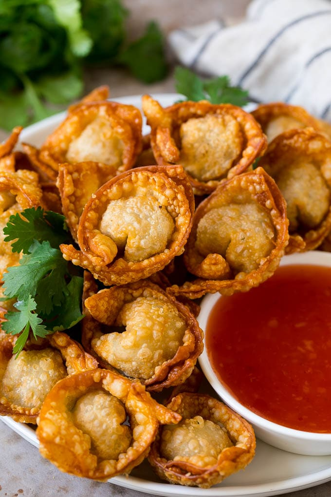

Home
Wonton

Fried wontons are a crispy and delicious snack made with thin wonton wrappers filled with a savory mixture of meat, vegetables, and spices. They are deep-fried until golden brown and crunchy on the outside while remaining flavorful inside. Perfect as an appetizer or evening snack, fried wontons are best served hot with your favorite dipping sauce.
Ingredients
For wrap:
- 1 cup plain flour
- ¼ cup corn flour
- 1 egg
- 1 teaspoon salt
For filling:
- 1 and ½ cups shredded cabbage
- ½ cup grated carrot
- 250 grams peeled prawns
- 1 tablespoon soya sauce
- 4-6 chillies finely chopped
- ½ teaspoon crushed black pepper
- ½ teaspoon tasting salt (optional)
- 1 and ½ tablespoon oil
- Oil for deep fry,also plain flour to roll
How to make:
- Heat pan with oil (1 and ½ tablespoon) and add prawn and soya sauce.
- Cook 2 minutes and add cabbage and salt. Stir well.
- When cabbage is half done add carrot, chilli and tasting salt.
- Stir it and after 2 minutes remove it from heat. And keep aside.
- For wrap mix all ingredients and water together and make hard dough.
- Divide the dough into 8 balls and roll each ball using plain flour.
- Make thin flat bread and cut into 4.5″ square.
- Use whole dough to make square wrap.
- Now stuff the wrap and fold like picture and to seal edge use water.
- Heat the oil on medium heat and fry the wonton till it becomes golden brown.
- Now Serve fried wonton as a snack with dipping sauce or with soup.